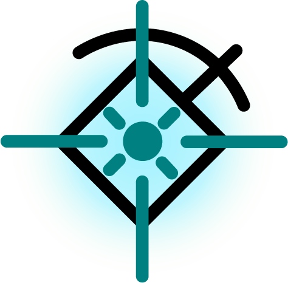

Los magos especializados en encantamientos son conocidos por su habilidad para imbuir objetos, ambientes y diversas cosas con propiedades mágicas. Estos objetos encantados pueden variar desde simples amuletos como los anillos y placas de los gremios, hasta poderosas armas y armaduras. Sin embargo, debido a los riesgos asociados con la magia (como dotar de propiedades dañinas o hacer trampas), los encantamientos están sujetos a estrictas regulaciones por parte de las autoridades mágicas.
Con el tiempo se descubrió que se podían añadir encantamientos a la misma fuente por los diferentes tipos de mago, y que cada mago podía solo hacer encantamientos de su tipo específico. Los Vi'kara solo podían potenciar la duración y propiedades físicas de lo encantado, siendo estos lo más importantes para poder hacer encantamientos durareros por años.
Los Shokator se encargaban de añadir efectos raros y abstractos que tuvieran poco que ver con la fuente, como por ejemplo que una espada brille en la oscuridad, o que las escobas puedan volar. Siendo estos los más importantes para hacer todo tipo de cosas imaginables, aunque un encantamiento de estos solo pudiera durar un día.
Los Shizura podían hacer como los Shokator pero obviamente con todo lo relacionado a los elementos, como por ejemplo que una espada pueda lanzar fuego, o que un escudo pueda crear una barrera de agua, añadir resistencia a ciertos elementos.
Los objetos encantados están estrictamente regulados por las arpías. Cada objeto mágico debe llevar una inscripción especial que certifica su encantamiento y lo identifica como un objeto regulado oficialmente. Estas inscripciones sirven tanto como medida de control como garantía de calidad y seguridad para los usuarios. El dominio impuesto por las razas aliadas, hace que se tenga un control absoluto y se lleva en un registro gestionado en Velaz y amparado por la seguridad de las arpías.
Un sistema más moderno de regulación utiliza esferas mágicas Aetherex. Estas esferas se insertan en los objetos encantados y, al activarse, proyectan un holograma que muestra el número de serie único del objeto y sus especificaciones mágicas. Esta tecnología representa la fusión entre magia tradicional y avances tecnológicos.
Aunque los Lipunk tradicionalmente rechazan la magia, existe una organización criminal formada por seguidores de un antiguo maestro (Rounfor) que comercia ilegalmente con tecnología mágica. Esta mafia se ha especializado en vender componentes Aetherex a los humanos imperialistas, quienes los utilizan para fabricar armas en serie. Esta actividad ilegal es el foco de una investigación llevada a cabo por un detective Lipunk.